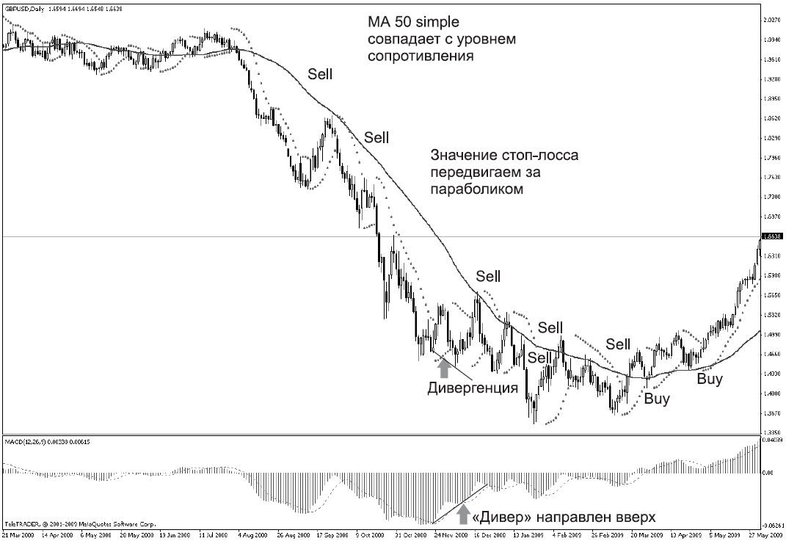
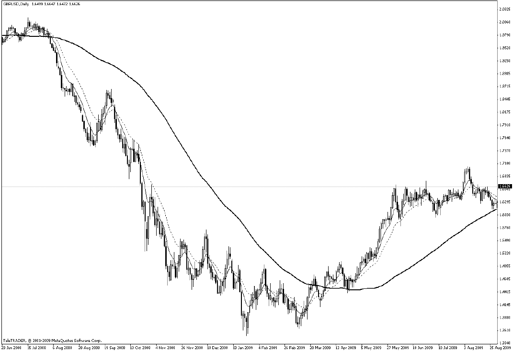
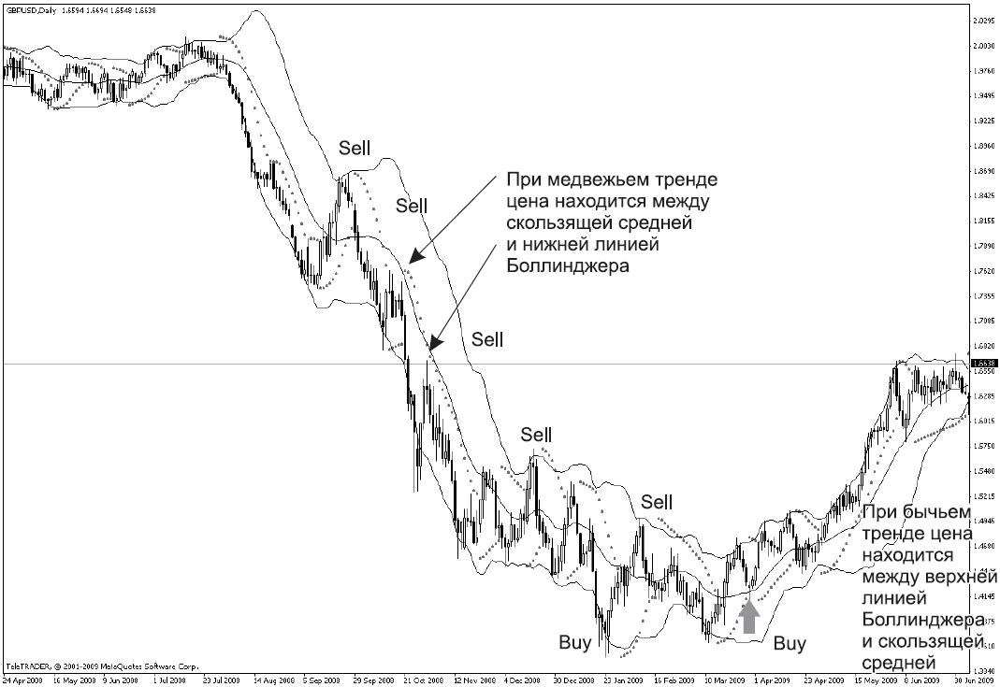
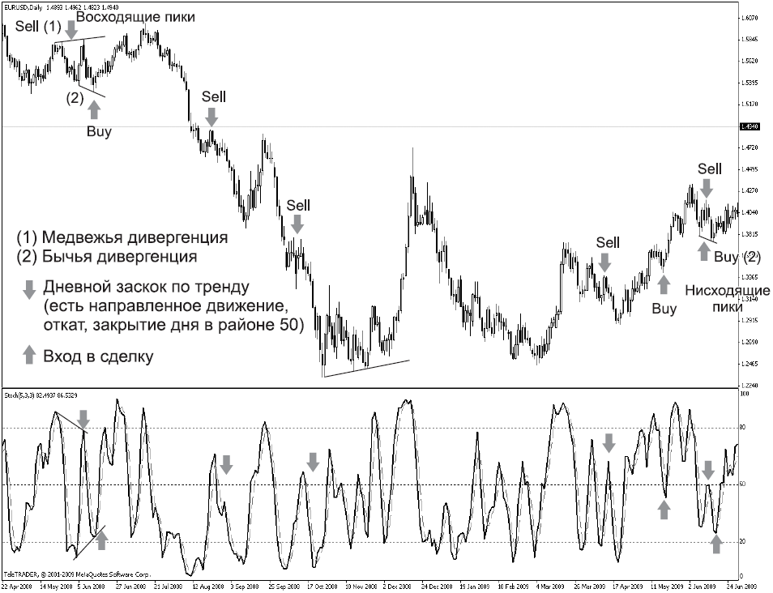
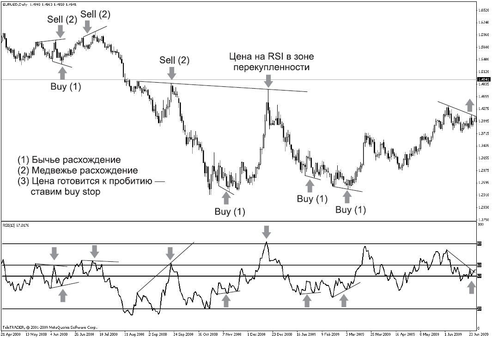

Индикаторы: друзья или предатели?

...Если ж друг не скулил, не ныл,
Пусть он хмур был и зол, но шел,
А когда ты упал со скал,
Он стонал, но держал!
Если шел за тобой, как в бой,
На вершине стоял хмельной,
Значит, как на себя самого
положись на него...
В каждом человеке живет мечта. И каждому хочется достигнуть ее с наименьшими затратами: и моральными, и физическими, и материальными.
Каждый, без исключения, в начале своего пути по рынку Форекс считает, что стоит только найти нужный индикатор – и вот она, твоя мечта, в кармане! А если такого помощника нет, его надо изобрести или написать самому!
Еще бы! Помню свою щенячью радость, когда, тестируя очередной новый для себя индикатор и получая по его сигналам прибыль, я внутренне ликовала: «Вот оно – счастье!» Получай только сигнал «купи», «продай», «жди» – и снимай профит. Но в самый неожиданный момент индикатор вдруг начинал вопреки своим прогнозам вести себя неадекватно по отношению к цене, то есть подавал ложные, как я считала, сигналы. В такие моменты я называла его предателем и начинала поиск другого, более совершенного, на мой взгляд, инструмента.
И лишь когда была собрана определенная статистика работы индикаторов, пришло понимание того, что, собственно говоря, они собой представляют. Ведь, как известно, «если звезды зажигают, значит, это кому-нибудь нужно».
Итак, индикаторы. Что они делают на нашем мониторе? Они обсчитывают то, что произошло с ценой за определенный период времени. То есть индикатор – это математическое воплощение движения цены. Это означает, что не индикатор управляет ценой, а цена управляет индикатором! Не индикатор разворачивает и «тащит» цену, а цена разворачивает и «тащит» за собой индикатор!
Вывод 1.Цена первична, а значение индикатора вторично!
То есть сначала мы проводим графический анализ, а затем ищем подтверждение наших взглядов на индикаторах. Закон жизни диктует нам следующую закономерность: есть какая-то новая идея, которая ведет к подъему, затем идет определенный период стагнации (стабилизации), и если нет новых идей, идет спад. Форекс подчиняется тем же жизненным законам: подъем ? флэт ? подъем (спад). То есть восходящий тренд сменяется флэтом, и если нет Hoвостей, способных выступить в качестве катализатора движения цены дальше вверх, тренд меняет свое направление на противоположное, превращаясь в нисходящий тренд. И на каждом из этих периодов работают определенные группы индикаторов.
Индикаторы тенденций работают при направленном движении, их называют трендоеыми.Индикаторы, которые улавливают разворотные моменты рынка и подают сигналы во флэте, называют осцилляторами.
Вывод 2.Индикаторы подразделяются натрендовые и осцилляторы.
Сначала мы выясняем, направленное движение или флэт царит на рынке, после чего выбираем необходимый тип индикаторов.
Индикаторы тенденции –хорошее средство анализа рынка, при сильных движениях они могут подавать синхронные сигналы, но при разворотах рынка зачастую отстают от его движений.
Индикаторов великое множество. Важно выбрать тот индикатор, сигналы которого вам будут понятны и придадут уверенности при входе в рынок. Разберем некоторые из них:
• скользящее среднее (Moving Average, MA) – это распространенное название индикатора, хотя правильно он называется движущим средним;
• схождение-расхождение скользящих средних (Moving Averagers Convergence Divergence, MACD);
• параболическая (parabolic) система;
• полосы Боллинджера (Bollinger Bands, ВВ).
Осцилляторы,как мы уже отметили, хорошо улавливают перемены при разворотных моментах рынка, они могут подавать синхронные и опережающие сигналы. Правда, с установлением сильной тенденции эти сигналы ненадежны, а зачастую ложны. К ним относятся:
• стохастический (stochastic) осциллятор;
• индекс относительной силы (Relative Strength Index, RSI);
• индикатор товарного канала (Commodity Channel Index, CCI);
• индикатор темпа (momentum).
Мы не будем сейчас выяснять, как высчитываются значения всех этих индикаторов (это можно сделать, прочитав специальную литературу), а разберем принцип их работы и правила использования при анализе рынка.
Индикаторы тенденции Движущие, или скользящие, средниеСуществуют три типа скользящих средних:
• простые, или среднеарифметические, скользящие средние (Simple Moving Averages, SMA);
• линейно-взвешенные скользящие средние (Linearly weighted Moving Averages, LMA); используются редко;
• экспоненциальные скользящие средние (Exponentially smoothed Moving Averages, EMA), применяются наиболее часто.
Скользящее среднее – это график усредненной цены, он представляет собой линию, налагаемую на график этой цены.
Как работает скользящее среднее?
• Если график индикатора пересекает график цены снизу вверх – это сигнал на покупку.
• Если график индикатора пересекает график цены сверху вниз – это сигнал на продажу.
Достоинства скользящих средних:
• легко определить направление тренда;
• можно использовать в качестве линии поддержки или сопротивления.
Если графическая линия поддержки совпадает с математической (то есть с линией скользящего среднего), то это сильнейшая зона поддержки, от которой, скорее всего, начнутся покупки. И по аналогии – если графическая линия сопротивления совпадает с математической, то эта зона является привлекательной для продаж.
Период скользящих средних определяется опытным путем по истории движения валюты. Для каждого временного периода и каждой валютной пары необходимо подбирать свой период скользящих средних (рис. 9.1).

РИС. 9.1.MA, MACD и параболическая система
К недостаткам скользящих средних можно отнести систематическое запаздывание сигналов.
Схождение-расхождение скользящих среднихСхождение-расхождение скользящих средних (Moving Averages Convergence Divergence, MACD) представляет собой простой осциллятор от двух экспоненциально сглаженных скользящих средних. Изображается в виде линии (см. рис. 9.1).
Чтобы четко обозначить благоприятные моменты с периодами 12 и 26 для покупки или продажи, на график MACD наносится сигнальная линия – 9-периодное скользящее среднее индикатора.
Как это работает?
Пересечение линий MACD и сигнальной линии является сигналом на покупку или продажу. Где пересеклись линии, туда и движется цена. Здесь проявляется свойство MACD как трендового индикатора.
На мой взгляд, этот индикатор очень хорошо и наглядно показывает дивергенцию.Дивергенция – это расхождение между значением цены и значением индикатора.
То есть мы принимаем за аксиому вывод 1 о том, что индикатор повторяет движение цены, и, исходя из этого, вправе предположить, что если цена идет вверх на графике и показывает пик, индикатор идет за ней и вырисовывает такой же пик. Если же индикатор не дотягивает до максимума, значит, он улавливает, что у быков уже недостаточно сил, чтобы двигать цену выше, и возможна коррекция. Это и называется расхождением (дивергенцией). Аналогично и с нисходящим движением. При этом часто дивергенция на индикаторе совпадает с сильными уровнями поддержки или сопротивления на графике цены, что и является для нас определенным сигналом для работы на отскок. То есть необходимо рассматривать совокупность сигналов, а не увидев дивергенции, показывающей направление вниз (вверх), срочно бросаться в рынок...
Часто дивергенцию используют в качестве сигнала входа в рынок по тренду или для добавления позиций.
Допустим, тренд доллара-иены идет вверх, причем как текущий, так и долгосрочный. A MACD тоже рисует бычью дивергенцию вверх... Если вы увидели, что час закрылся ниже прошлого, a MACD – выше прошлого минимума, сразу покупайте! Делайте это в первые же секунды следующего часа, может, даже в конце того же часа; хоть он еще и не закрыт, но уже все видно и все ясно. Разница между трендовыми и контртрендовыми дивергенциями огромна. По тренду это повод купить от сильной поддержки (либо продать от сопротивления) или повод добавиться, что против тренда рискованно. Развернуть тренд из-за какой-то дивергенции на индикаторе? Вот так взять и перевернуться? Это трудно!
Недостаток MACD – запаздывание сигналов.
Параболическая системаЭта система была разработана в качестве механической системы постановки стоп-лоссов. Допустим, вы имеете прибыльную позицию 100 пунктов. При этом вы ожидаете дальнейшего движения цены в вашу сторону то есть увеличения прибыли, и закрывать позицию не торопитесь. У вас возникает вполне законный вопрос: где же поставить стоп-лосс, чтобы защитить свою прибыль от возможного разворота цены против вас и что для вас будет являться сигналом на фиксацию прибыли? Этот индикатор очень наглядно демонстрирует уровни постановки стоп-лоссов.
Параболическая система на рис. 9.1 показана точками, которые расположены под графиком цены, если цена идет вверх, и над графиком, если цена идет вниз. Поскольку эта система показывает уровни стоп-ордеров, точка – это то значение цены, на которой необходимо ставить стоп-лосс, но не точно на ней, а отступив от нее, как минимум, на величину спреда.
Сигналом для совершения сделки на основании линии параболической системы служит пересечение с ней графика цены. Этот момент сигнализирует либо о развороте тренда, либо о его временной стабилизации. Другой сигнал линии параболической системы – ее направление, которое характеризует текущую тенденцию: в случае положительного наклона линии параболической системы это бычий тренд, в противном случае – медвежий.
К достоинствам параболической системы относится то, что она реагирует на изменение цен во времени, позволяя определить направление тенденции и время заключения сделки.
Выделяют два периода жизни линии параболической системы – зрелость и старость. С их учетом и надо воспринимать сигналы.
В зрелом периоде график цены, как правило, идет параллельно линии параболической системы, а в «старости» эти графики начинают сближаться вплоть до пересечения. Соответственно и полученные сигналы можно разделить на правильные, подаваемые в зрелом периоде, и ложные, относящиеся к старости.
У меня, кстати, есть ученик, который работает исключительно по линиям параболической системы. Когда он пришел ко мне и мы начали учиться рисовать линии поддержки и сопротивления, выяснилось, что даются эти волшебные линии ему с огромным трудом. Он никак не мог понять их предназначения и выполняемых ими функций. А поскольку желание работать и зарабатывать было огромно, а депозит позволял определенные риски, на помощь пришла параболическая система. Он взял 4-часовой период у евродоллара и, как только замечал начало движения, тут же вставал в сторону этого движения. Мои доводы о том, насколько это невыгодно, что цена часто после определения движения делает коррекцию и ему приходится пересиживать эту коррекцию, хотя он мог бы встать в сделку по более выгодной цене и т. д., им не воспринимались. Но те качества, которые с годами работы в нем выработались (а мой ученик – потомственный военный, теперь уже пенсионер), а именно дисциплина и неукоснительное следование разработанному плану действий, принесли хороший результат. Его депозит ежемесячно повышается в среднем на 20 %. «Неплохая прибавка к моей пенсии», – говорит он.
Как же это работает?
1. Определяется дневное направление цены по параболической системе. Позиции открываются только в этом направлении!
2. Работа идет только в дневное время – именно поэтому была выбрана валютная пара евро-доллар.
3. Отслеживается закрытие каждой 4-часовой свечи (с 10.00 до 22.00), поэтому нет необходимости неотступно сидеть за монитором!
4. При получении сигнала на параболической системе открывается позиция в сторону направления движения.
5. Выставляется стоп-лосс (за появившейся точкой на линии параболической системы плюс 5 пунктов плюс величина спреда).
6. Как только прибыль позволяет, стоп-лосс переустанавливается на цену открытия.
7. Стоп-лосс далее нужно тащить за собой как чемодан, пока не будет получен сигнал, прямо противоположный тому, который послужил сигналом к открытию позиции. После этого позицию закрывают.

РИС. 9.2.Скользящие средние с периодами 8,18 и 89
Но еще раз повторю: депозит должен позволять достаточно серьезные риски, иначе «овчинка выделки не стоит.
Кстати, со скользящими средними можно экспериментировать. В качестве примера на рис. 9.2 показаны экспоненциальные скользящие средние (ЕМА) с периодами 8 (сплошная линия) и 8 (пунктирная линия), а также простое скользящее среднее (SMA) с периодом 89 (полужирная линия).
Итак, 21 августа 2009 года. Вот фунт резко и долго валится, и за ним разворачиваются мувинги. Конкретно вниз, при этом, расходясь, они рисуют так называемую вилку. 26 августа падение приостанавливается, и цена понемногу начинает отползать вверх. Так вот, 28 августа первое касание ЕМА8 при такой картинке – это, как правило, точка, откуда фунт продолжит падение к предыдущим низам, а то и ниже. То есть отмечаем, что на дневном уровне ЕМА8 и на часовом SMA89 они практически совпадают, и выставляем ордер на продажу. Цель – предыдущие низы. По истории можете проверить, что цена полностью отработала этот сигнал, то есть пришла к предыдущим низам.
Полосы БоллинджераПолосы Боллинджера – это трендовый индикатор, основой которого служит линия скользящего среднего (рис. 9.3). Его работа основана на том, что 5 % цен должно находиться за пределами линий индикатора, а 95 % – внутри, то есть между линиями ВВ+ и ВВ-.

РИС. 9.3.Полосы Боллинджера
Причем при бычьем тренде цена на протяжении всего тренда, за исключением коррекций, находится между верхней линией Боллинджера (ВВ+) и линией скользящего среднего. В случае медвежьего тренда цена лежит между нижней границей Боллинджера (ВВ-) и линией скользящего среднего.
Если цена поднимается выше верхней линии Боллинджера, а затем опускается, пересекая ее сверху вниз, то рекомендуется принимать решение о продаже, поскольку потенциал роста быков исчерпан.
Если же цена пересекла нижнюю линию Боллинджера сверху вниз, а затем пересекла ее еще раз, но уже снизу вверх, то рекомендуется принимать решение о покупке, поскольку цена оттолкнулась от своей линии поддержки в виде нижней линии Боллинджера.
Существуют также вспомогательные сигналы, подтверждающие основные.
• Схождениелиний Боллинджера наблюдается при успокаивающемся рынке и при отсутствии сильных колебаний цен. Если схождение линий Боллинджера происходит при небольшом бычьем или медвежьем наклоне, то подается слабый сигнал к продолжению ранее действующего бычьего или медвежьего тренда. В случае, если схождение происходит «горизонтально», это слабый сигнал к развороту и началу нового тренда.
• Расхождениелиний Боллинджера может происходить при усилении действующего тренда или начале нового. В случае, если расхождению соответствует увеличение объемов сделок, сигнал от индикатора имеет большую силу.
Конечно, индикаторов гораздо больше, чем я здесь описала. Каким из них вы будете пользоваться – ваше дело. Главное – четко знать, на какие его сигналы можно и нужно реагировать. Для этого сначала протестируйте индикатор на демосчете и, только получив стабильный результат, вносите его в список своих друзей. Но, как говорится, «один друг – хорошо, а два лучше». Поэтому лучше ориентироваться на сигналы не одного, а нескольких инструментов. И если они хором вам говорят «купи» или «продай», то это добавит вам уверенности при вхождении в сделку. А если вдруг индикаторы начинают вести каждый свой разговор, оценивайте это как сигнал «ждите». Ждать тоже надо уметь! И помните о том, что цена диктует необходимые действия индикатору, а не наоборот.
ОсцилляторыПоговорим теперь об осцилляторах. Как известно, на финансовом рынке происходят колебания цены. Цена идет вверх, затем вниз, опять вверх и опять вниз. Внешне эти колебания выглядят довольно хаотично. Но это на первый взгляд. Для того чтобы колебания систематизировать, были разработаны осцилляторы. Осциллятор похож на маятник, который раскачивается от своих крайних значений к нормальным средним.
Стохастический осцилляторСамый популярный индикатор, применяемый на рынке Форекс, – это стохастический осциллятор.Помню, как, тестируя стохастик (так трейдеры называют сокращенно этот осциллятор) и имея весьма смутное представление о его работе, я ориентировалась исключительно на то, что цена оказалась в зоне перекупленности (перепроданности). Это традиционный сигнал стохастика, который формируется при пересечении быстрой и медленной линий. Я радостно потирала руки, получая сигнал, вставала в сделку и снимала прибыль. «Вот оно!» – пело в душе, «Моя палочка-выручалочка», – ласково называла я его. И вдруг... грянул гром средь ясного неба. Начался тренд, и мой любимый индикатор, которому я начала доверять, как себе, вдруг стал «залипать» к верхним границам и посылать мне ложные сигналы. Но тогда-то я их не воспринимала как ложные, а принимала за чистую монету и честно вставала в сделки, практически не глядя на график цены, а только ориентируясь на него, любимого. В итоге я вставала против рынка, нарушая первую заповедь трейдера «Тренд – твой друг». Другие снимали замечательную прибыль, ведь для трейдера тренд – это праздник: за короткий период зарабатываешь серьезные суммы. А я... я получала один «стоп» за другим, и в голове вертелась фраза Остапа Бендера: «Мы чужие на этом празднике жизни».
Потом пришло понимание того, что те законы, которые действуют при движении на автомобиле, на пешехода не распространяются. Пешеход ходит своими тропами, а точнее, тротуарами... Так и на Форексе... То, что работает в боковом коридоре (во флэте), не работает при сильных движениях цены, то есть при тренде. И те индикаторы, которые отлично справляются со своей работой при тренде, в боковом движении цены могут позволить себе некоторые вольности. Законы военного времени, несомненно, отличаются от законов мирного.
Итак, стохастик (рис. 9.4).
Поскольку он очень хорошо работает в боковом коридоре, а Форекс – это на 70 % «флэтовый» рынок, стохастик можно назвать реальным помощником трейдера! Поэтому разберем прежде всего достоинства этого осциллятора:
• хорошо улавливает перемены при разворотных моментах рынка;
• часто подает синхронные и/или опережающие сигналы при боковом коридоре.
Недостатки:
• наличие «флэтовых» азиатских сессий, когда часовые осцилляторы разряжаются и искажают свои показатели;
• при сильных движениях рынка (при тренде) стохастик «залипает» и «лежит» на линиях перекупленности, перепроданности, начиная подавать ложные сигналы.
Как это работает?

РИС. 9.4.Стохастический осциллятор
При общем росте цен показатели цен закрытия, как правило, стремятся к верхней границе ценового диапазона, и наоборот, при нисходящей тенденции цены закрытия стремятся к нижней границе диапазона. В стохастическом анализе используются две кривые: %К и %D. Вторая кривая более значимая, по ее динамике можно судить о важнейших изменениях на рынке. Стохастические осцилляторы показывают способность быков или медведей закрывать рынок вблизи верхнего или нижнего края диапазона.
При подъеме рынок стремится закрыться вблизи верхнего края тренда. Если быки могут поднять цены в течение периода, но не могут закрыть их вблизи максимума, стохастические линии начинают убывать. Это дает сигнал на продажу. То же верно и при покупке.
Традиционные сигналы стохастика формируются при пересечении быстрой и медленной линий. Сигналы на продажу формируются при пересечении быстрой линии с медленной линий в зоне перекупленности (кривая находится в зоне от 10 до 15). При этом следует учитывать, что пересечься могут и восходящие быстрые и медленные линии, поэтому обязательно надо дождаться разворота медленной линии стохастика (на рис. 9.4 медленная линия – пунктирная, а быстрая – сплошная).
Сигнал на покупку формируется при пересечении быстрой и медленной линий в зоне перепроданности (когда кривая находится в области значений от 85 до 90).
В этом случае, если недельный тренд бычий, а дневные линии стохастика опустились ниже своей нижней линии, следует отдавать приказ о покупке. Если ситуация сложилась прямо противоположная, то следует продавать.
Несмотря на то что стохастик является хорошим помощником при боковом движении, у него имеется замечательный трендовый сигнал. Этот сигнал называют дневным заскоком по тренду.
Как он работает?
Предположим, имеется направленный тренд (см. дневной график цены), стохастик, конечно, заходит в область предельных значений и находится в этой области достаточно долго. И когда цена идет на первую глубокую коррекцию (быстрая линия осциллятора пересекает отметку 50), это служит сигналом для входа в позицию по тренду.
Наиболее серьезные сигналы на покупку и продажу появляются, когда имеет место дивергенция, или расхождение [4].
Медвежье расхождение происходит, когда кривая D находится выше 70 и образует два опускающихся пика, а цены продолжают расти.
При бычьем расхождении, наоборот, кривая D находится ниже 30 и образует двойное поднимающееся основание, а цены начинают падать.
Индекс относительной силыИндекс относительной силы (Relative Strength Index, RSI) представляет собой опережающий, или совпадающий, осциллятор, который определяет силу бычьих или медвежьих настроений, отслеживая изменения в ценах закрытия в течение определенного интервала времени (рис. 9.5).
Как работает RSI?
RSI колеблется между значениями 0 и 100. Горизонтальные вспомогательные линии, обозначающие границы перекупленности и перепроданности, должны пересекать наиболее высокие максимумы и глубокие минимумы. Обычно их проводят на уровнях 30 и 70. Когда же наблюдается сильное трендовое движение, то можно выполнить некоторое смещение линий. На сильных бычьих рынках они могут быть на уровнях 40 и 80, а на сильных медвежьих – на уровнях 20 и 60.
Итак, когда RSI поднимается выше верхней вспомогательной линии, это говорит о силе бычьей тенденции, а также о том, что рынок находится в зоне перекупленности и готов к коррекционным продажам. А когда RSI опускается ниже нижней вспомогательной линии, это говорит о силе медвежьего настроения на рынке и в то же время о том, что стоит приготовиться к коррекции, то есть к покупкам.
К недостатку индекса относительной силы относится то, что любая сильная тенденция независимо от направления (вверх или вниз) обычно довольно быстро заставляет осцилляторы принимать критические значения. В таких случаях, ошибочно предполагая, что рынок перекуплен либо перепродан, можно закрыть прибыльные позиции преждевременно.

РИС. 9.5.Индекс относительной силы
Первое появление значения RSI в области перекупленности или перепроданности – обычно всего лишь предупреждение! Более сильный сигнал для мотивации к действию – появление кривой в критической области второй раз.
Перекупленность или перепроданность – ситуация, возникающая в случае, когда котировки за счет ажиотажного спроса или предложения достигают неоправданно высоких или низких значений соответственно.
В качестве достоинства индекса относительной силы можно отметить то, что это один из немногих индикаторов, который дает сигналы не после того, как цена уже начала свое движение, а до начала этого движения. То есть динамика графика RSI на нескольких временных периодах опережает динамику цен на графике, что дает нам возможность спрогнозировать дальнейшее поведение цены.
Чтобы использовать этот замечательный сигнал, нарисуйте на графике RSI линии тенденций. Допустим, существует восходящий тренд и на графике цен, и на RSI. Пусть на графике цена упирается в трендовую линию, а на RSI уже пробила ее вниз. Это говорит о том, что не стоит в этот момент выставляться на покупку по тренду: скорее всего, цена начнет коррекцию вниз. То есть когда график RSI пробивает линию восходящего тренда сверху вниз, следует выставлять ордер на продажу.
И наоборот, если график RSI пробивает снизу линию восходящего тренда сверху вниз, следует выставлять ордер на покупку.
Важно рассматривать сигналы большого периода, дневные и/или 4-часовые. При этом обязательно дождаться закрытия 4-часового периода и/или дня. В противном случае может оказаться, что вы встанете на пробитие трендовой линии, а по закрытии 4-часового периода это окажется «фолзом» (ложным пробитием) и график RSI закроется выше трендовой линии. Используя этот сигнал на большем периоде, вы поймете, насколько он замечательный помощник. Сколько раз он выручал и помогал зарабатывать!
Расскажу один случай из практики. Ноябрь 2007 года, пара евро-доллар. Цена стоит в боковом коридоре около трех месяцев. Боковой коридор шириной в 600 пунктов. Трейдеры покупают снизу от поддержки, у сопротивления закрывают прибыль и открывают сделки на продажу. Долгое стояние в боковом коридоре несколько притупляет бдительность. Хотя каждый раз ждем прорыва коридора, помним, что линия сопротивления – лучшая цена на продажу. Выставляю от нее ордер на отскок от линии сопротивления. Утром 26 февраля 2008-го включаю монитор и, как всегда, начинаю просмотр с дневных графиков... И вижу, что хвост RSI, который пробил трендовую линию вверх еще вчера, сегодня так и остался над пробитой линией. Это дневной сигнал на пробитие вверх! Срочно отменяю ордер на отскок от линии сопротивления и ставлю ордер на ее пробитие. И понеслось! 900 пунктов вверх без коррекции. Новый максимум евро-доллара, и, конечно, благодарность моему другу RSI за оказанную мне помощь и сигнал!
Дивергенция на RSI происходит, когда цены поднимаются до нового максимума. Бычьи расхождения дают сигнал на покупку. Это происходит, когда цены достигают еще более низкого, чем ранее, значения, в то время как RSI доходит до минимума более высокого, чем во время предыдущего снижения. Следует покупать, когда индекс относительной силы начнет возрастать с этого последнего минимума.
Сигнал на покупку будет особенно сильным, если предпоследний минимум RSI оказался под нижней вспомогательной линией, а последний – над ней. В случае медвежьего расхождения картина прямо противоположная. Сигнал на продажу особенно силен, если предпоследняя вершина RSI лежит выше верхней вспомогательной линии, а последняя – ниже.
Подведем итоги.
Перекупленность – это то состояние рынка, при котором среди быков не находится желающих покупать или их возможности в покупке иссякают и они не могут поднять цены на новую высоту.
В это время на рынке происходит некоторое затишье, цены не имеют сильно выраженного бычьего направления, и осциллятор разворачивается вниз и через какое-то время пробивает границу зоны перекупленности. Этим основная масса осцилляторов свидетельствует о затухающей силе быков и скором развороте тренда. Точно так же, состояние перепроданности наступает при достижении осциллятором более низкого значения по сравнению с предыдущими. В этом случае осциллятор готов начать рост.
На графиках уровни перекупленности и перепроданности отмечают горизонтальными вспомогательными линиями.
При этом для дневного графика линии должны пересекать лишь наиболее высокие вершины и впадины осциллятора за последние 6 месяцев. Их положение следует корректировать каждые 3 месяца.
Осцилляторы могут находиться в зоне перекупленности или перепроданности в течение многих недель, когда начинается новая тенденция, выдавая преждевременный сигнал на контрсделку. В подобных случаях следует переходить к анализу трендовых индикаторов.
На что еще стоит обратить внимание, так это на так называемые товарные валюты. К ним относятся AUD, CAD, NZD, CHF (золото, медь, никель, нефть) и USD. Почему товарные валюты? Потому что американский доллар (как и канадский) реагирует на движение золота. Если цена золота идет вверх, то доллар пойдет вниз. Чем не индикатор? Если нефть идет вверх, то и доллар и канадец пойдут вниз. Необходимо отслеживать движение цены на нефть.
Выводы относительно индикаторов и осцилляторовИтак, мы рассмотрели индикаторы и осцилляторы. Каждый из них, как, впрочем, и мы с вами, имеет свои недостатки и безусловные достоинства. Важно помнить, что необходимо использовать те индикаторы и осцилляторы, с которыми работает большинство трейдеров. Плыть против течения рынка – это, конечно, повышает адреналин, но не факт, что вы выберетесь сухим из воды. Оно вам надо? А сигналы, очевидные для большинства, будут двигать рынок в том направлении, в котором это большинство выставит ордера. Сколько работаю, столько слышу от трейдеров о неких новых механических системах, способных все просчитать и дать сигнал о входе в рынок. Не один раз, лелея надежду на чудо, я мечтала об индикаторе, который вместо меня все просчитает и даст мне сигнал: «Купи!» или: «Продай!», а затем: «Снимай прибыль». Но каждый раз такой индикатор оказывался иллюзией. Сами подумайте: если бы можно было придумать такую систему, кто бы начал ее (эту систему) предлагать для широкого использования? Сам разработчик за короткий период заработал бы состояние, равное состоянию Сороса. Спрашивается, зачем ему нужны мы? Поэтому «на Бога надейся, а сам не плошай!»
Проводим графический анализ, определяем направленность тренда и исходя из этой информации устанавливаем, с кем нам лучше контактировать – ведь у нас есть друзья на все случаи жизни! Они всегда готовы прийти на помощь. Есть тренд (направленное движение) – обращаемся к индикаторам. Есть боковое движение (цена колеблется в одном диапазоне) – обращаемся к осцилляторам. При этом мы учитываем их недостатки и ориентируемся на их достоинства! И конечно, зарабатываем! Удачи вам, трейдеры! А она, как известно, любит победителей.
? «МАШИНИСТ» И ВОВАН
(из цикла « Невыдуманные истории»)
К нам пришел новый трейдер, Андрей. Сам пишет программы и тестирует их на своем счете. Приходит и рассказывает: «Машина купила...», «Машина продала». Когда-то успешно, когда-то нет. Но он оптимист, не опускает руки, работает дальше... Мы его любовно называем «Машинист» и «Железяка». Андрею очень хочется с кем-нибудь поговорить о своей машине. Но поскольку у всех она вызывает скепсис, от этих разговоров отмахиваются. Также у нас в дилинге есть Вован, признанный корифей, который верит только в движение цены и не признает никаких индикаторов. Его может взбесить даже разговор о безобидном параболике, а уж слово «стохастик» приводит просто в ярость. Когда у нас появился Андрей, Вован был в отпуске... И вот Андрей подваливает ко мне и спрашивает: «Ир, а с кем все-таки можно поговорить о программе? Я не поверю, что этим никто не занимается...» В этот момент мимо проходил Славик. «Как это не занимается?» – он удивленно поднял брови. – Вован этим очень даже увлекается. Его хлебом не корми – дай какую-нибудь программу написать...» «Машинист» просиял: «А что он использует в своих программах?» – и заговорил, заговорил... Славик в ответ: «Во-во, у нас только Вован этим владеет...»
Вернулся из отпуска Вован, все с нетерпением ждали его встречи с Андреем. «Машинист» начал загружать Вована своими специальными терминами, Вован, приподняв очки, сначала опешил и даже несколько онемел от такой наглости, а когда пришел в себя... страшный крик потряс дилинг. Ученики вздрогнули, но Славик их успокоил: «Все нормально. Это Вован убеждает "Железяку" не тратить время на разработку машины. Горячо убеждает!!!»
На самом деле каждый из нас опирается на ту систему, которой верит и которая дает ему реальный результат. Есть приверженцы технического анализа, есть любители математического (индикаторы – их слабость), есть поклонники фундаментального подхода. Важно понимать, что вы делаете и с какой целью. И конечно, важен конечный результат. Нет результата – нет системы. На мой взгляд, вместо того чтобы упорно ломиться в одном направлении, лучше использовать комплексный подход.